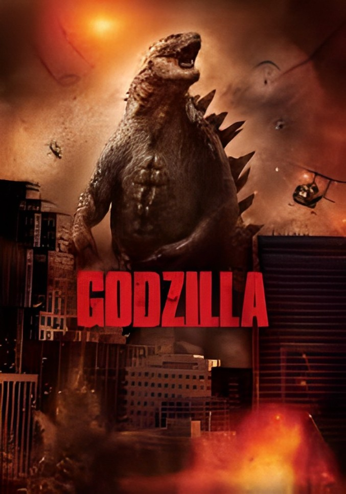
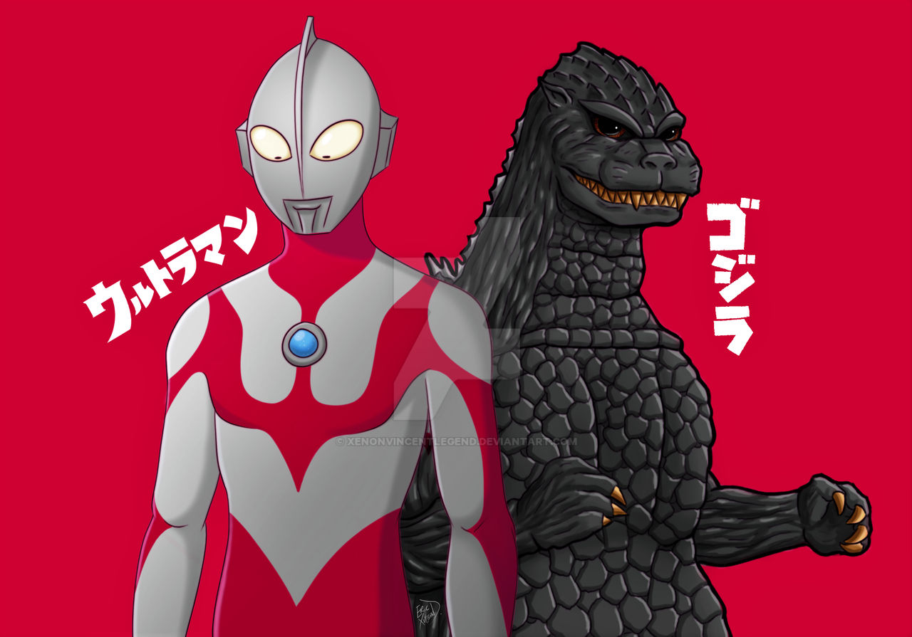

godzilla marah
terlihat jelas godzilla sedang marah dan menghancurkan kota

godzila mengamuk di kawasan cibinong melahap warga dan menghancurkan sekitar
sepertinya godzilla kelaparan setelah hibernasi yang cukup lama
tni au ,dan tni ad membantu untuk mengusir sang dewa zilla itu dengan sekuat tenaga tetapi masih saja godzilla masih terlalu kuat
dan akhir nya ada seorang pejuang yang ternyata seorang ultraman

dan ternyata mereka bersahabat dan tidak menghancurkan kota
TAMAT